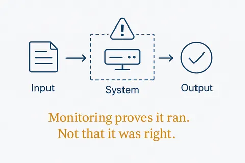
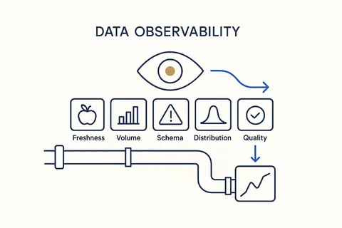
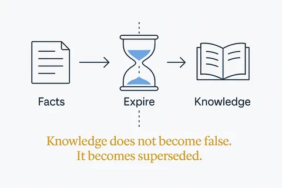
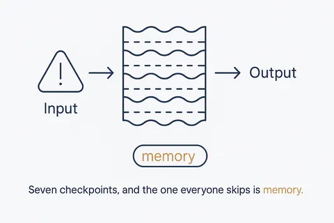
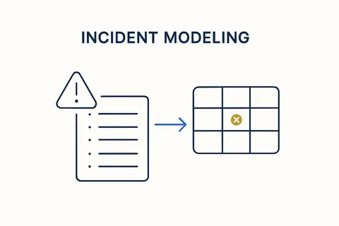
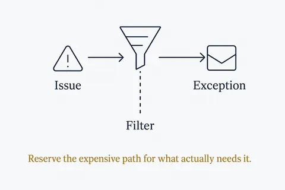

Privacy and control
What may leave the building, what must be checked, and how to notice that something stopped working. 7 concepts; each opens its full page in its own library.
 Silence Is Not Absence of FailureNo complaints does not mean no problems. It usually means people adapted to the errors and stopped mentioning them.Structure Beats Magic →
Silence Is Not Absence of FailureNo complaints does not mean no problems. It usually means people adapted to the errors and stopped mentioning them.Structure Beats Magic →
Uptime Is Not CorrectnessMonitoring proves the system ran. Observability for AI has to prove the answer was right — and those are different instruments.Structure Beats Magic →
Data ObservabilityContinuous visibility into the health of your data pipelines — freshness, volume, schema drift, distribution and quality — so problems surface on their own, at the boundary, in time to fix them.Breakthrough Modeling →
Facts ExpireKnowledge doesn't become false, it becomes superseded. A store that only accumulates is a store that quietly gets less true.Structure Beats Magic →
Guardrails Are LayersA guardrail is not one filter at the end. It's seven checkpoints with different jobs — and the one everyone skips is memory.Structure Beats Magic →
Incident ModelingModel delivery incidents as data, not loose tickets — a late feed, a failed quality check, a broken schema becomes a tracked, owned, queryable object in the model itself.Breakthrough Modeling →
Escalate by ExceptionRoute the easy work to the cheap path and reserve the expensive one for what actually needs it. Power by exception, not by default.Structure Beats Magic →Everything on this topic → (use cases, articles, resources)
Other categories: Design thinking and small experiments · From proof of concept to something you rely on · Vibe coding practices that hold · Data, rules and structure first · Build, buy or rent · Building your own data models · Components and building blocks · The business OS